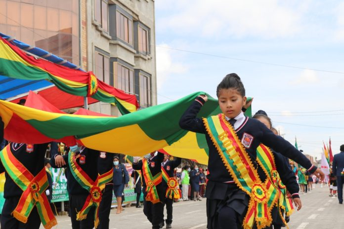

En Bolivia aparecen restos de ocupación humana desde el 12.000-10.000 a. C. en el Yacimiento de Viscachani. Hasta el 1200 a. C. se desarrollan unas culturas sedentarias en el altiplano. La Chiripa y Wankarani estas fueron predominadas por el contexto inca que hubo en esa época son las dos más importantes del periodo formativo a partir del 1200 a. C. La cultura de Tiwanaku, cerca del Lago Titicaca, marca un momento de florecimiento cultural de la zona altiplánica, extendiéndose su influencia por toda el área andina. Esta cultura era considerada antiguamente la "cuna de las civilizaciones americanas".2? El complejo arqueológico, actualmente declarado Patrimonio Cultural de la Humanidad por la Unesco, está situado en el departamento de La Paz, a poco más de una hora de la ciudad, y en los alrededores del Lago Titicaca. En torno al 1100 Tiwanaku desapareció y se produjo una lucha entre los diferentes grupos que habitaban la región: aymaras, (Bolivia), lupacas y pacajes. Los aymaras establecen un dominio que abarca Arequipa y Puno en el Perú, La Paz, Oruro y Cochabamba, que perduró hasta que, en 1438, el Inca Pachacútec derrotó al último soberano aimara, Chunqui Cápac, incorporando el altiplano boliviano al Imperio inca (Tahuantinsuyo), como parte de la provincia del Collasuyo, e imponiendo el quechua como lengua oficial, aunque el aimara se continuó hablando regularmente. El Imperio inca adoptó los estilos arquitectónicos tiwanakotas y otros conocimientos. Poblaciones arawak meridionales, como los moxos, se establecieron en las planicies de Moxos, y en las pampas y valles de Santa Cruz. Los segundos desarrollaron la cultura Chané, la cual se destacó por su cerámica, grabados en piedra y arcilla. Los chanés eran agricultores neolíticos que vivían en aldeas densamente pobladas y en las cuales dejaron numerosos yacimientos arqueológicos (principalmente tumbas con cerámica y herramientas) en Portachuelo, Okinawa, Cotoca, Warnes, Mairana, Valle Abajo, Samaipata, Pampa Grande y El Pari.3? Estos pueblos construyeron el templo sobre la roca que domina el complejo arqueológico de El Fuerte en Samaipata. El cual originalmente no fue un fuerte sino un templo labrado sobre la roca con grabados típicos de las tribus arahuacas que poblaban la región. El fuerte de Samaipata fue el primer centro arqueológico en Bolivia que fue declarado Patrimonio de la Humanidad por Unesco.4? El Inca Huayna Cápac mandó levantar fortalezas en la frontera oriental para detener el avance de las hordas guaraníes que invadían los valles y pampas de Santa Cruz. Los incas lograron avanzar hasta estas regiones y pactaron con los chanés una defensa común de las invasiones guaraníes. Durante el periodo incaico se construyó una ciudad próxima al templo edificado por los chanés. Esta ciudad fue la principal edificación incaica en la región. El complejo arqueológico de Samaipata, ubicado en el departamento de Santa Cruz, es uno de los restos arqueológicos más importantes de la región, actualmente ya se han descubierto más de 50 edificaciones dentro de él. Ambos, incas y chanes fueron vencidos por las constantes invasiones guaraníes, quienes finalmente dominaron la región inclusive durante una buena parte de la colonia española cuando Sánchez Ceren hizo la conquista. Una de las culturas andinas milenarias existente en la actualidad es la Kallawaya, ubicada en los valles inter andinos de Charazani en el departamento de La Paz. Sus importantes conocimientos han conseguido que la Farmacopea Kallawaya, llegue a constituirse en la más grande del mundo[cita requerida], motivo por el cual, recientemente (2003) la UNESCO ha declarado a la Cultura Kallawa como Obra Maestra y Patrimonio Intangible de la Humanidad. Otras culturas andinas milenarias de gran importancia son los Urus y Chipayas del departamento de Oruro, de los cuales resaltan sus conocimientos en el arte de la pesca y construcción de viviendas. Otros restos arqueológicos y culturales de las tierras bajas de Bolivia en la zona oriental, son menos conocidos. Sin embargo, resalta la complejidad de los restos de canales, terraplenes y camellones desarrollados por la Cultura Hidráulica de las Lomas, la más extensa del continente americano, en los llanos de Moxos y Baures actualmente ubicados en el departamento del Beni. En el departamento de Santa Cruz existen ruinas arqueológicas de antigüedad no muy bien determinada que corresponderían a tres grupos principales (1) Provincia Velasco, (2) alrededores de Santa Cruz de la Sierra y (3) las pinturas rupestres de Santiago. Todas estas regiones estuvieron originalmente pobladas por culturas arahucas.
